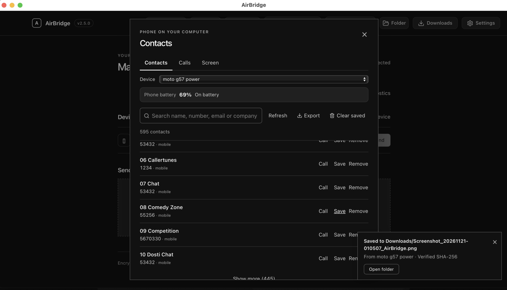

GUIDE SCREEN SHARING
View your Android screen on your computer
Showing a phone screen on a laptop usually means a Chromecast, a commercial remote-support tool, or a screenshot thread. AirBridge streams the display as low-latency H.264 over the paired, encrypted session — and only after you approve that specific session on the phone.

What people usually do instead
- Cast to a TV with a Chromecast or a smart display, then photograph the screen — fine for a slide, useless for debugging an app.
- Remote-support suites require accounts, install agents with broad permissions, and often route through a vendor cloud.
- Screenshots in chat lose motion and timing, and leave copies behind.
- Developer tools such as
adb screenrecordare excellent for engineers and not a realistic option for everyone else.
How the stream is built
Android encodes the approved display with hardware MediaCodec H.264, caching SPS/PPS codec headers onto every keyframe and avoiding B-frames so decoding stays simple. The desktop decodes with WebCodecs using ISO 14496-15 avcC configuration, paces canvas draws through requestAnimationFrame, and asks for an instant PLI keyframe when a delta frame is lost — which keeps the picture usable on a real Wi-Fi link instead of freezing until the next scheduled keyframe.
- Frame rate: about 30 fps on a healthy local network, adapting to the link.
- Path: the same encrypted peer session as file transfers, over your network.
- Computer ↔ computer: desktops can also share a screen or window with each other through the browser’s own screen picker, encrypted end to end.
- Audio: optional per-session playback audio is off by default; microphone audio is never captured.
Consent, DRM and what AirBridge will not do
- Two approvals per session: an in-app confirmation on Android plus Android’s own MediaProjection prompt. The device being shared can stop the stream, and so can the viewer.
- Protected content stays blank. Apps that set
FLAG_SECURE— banking, Netflix, DRM video — appear black by design. AirBridge does not classify apps, bypass protected surfaces, or extract protected audio. - Viewing only. There is no tap, swipe or keyboard injection. AirBridge is not a remote-control tool.
- Not a recorder. A share is a live view; there is no recording feature in AirBridge.
Try it
macOS and Linux:
curl -fsSL https://raw.githubusercontent.com/DigantaDey/AirBridge/main/install.sh | bashWindows PowerShell:
powershell -ExecutionPolicy Bypass -Command "iwr https://raw.githubusercontent.com/DigantaDey/AirBridge/main/install.ps1 -UseBasicParsing | iex"Pair the phone, open Screen on the computer, and approve the request on Android. The phone battery level is shown in the panel so you know when to plug in during a long demo.
Screen sharing limits
- Latency is your network’s latency. A congested 2.4 GHz link or a battery-saver throttle shows up as fewer frames; AirBridge does not claim a fixed millisecond budget.
- No audio unless you opt in per session, and only where Android permits playback capture.
- Some apps opt out of capture entirely and will be blank or silent; that is the platform working as designed.
- Screen-off is not a supported mode for watching a display; the phone screen drives the stream.
Questions about this guide
Can I watch my Android screen on a Mac without a Chromecast?
Yes. The macOS companion receives a consent-based H.264 stream over the paired connection; no casting device or account is involved. Windows and Linux companions receive the same stream.
Does screen sharing include audio?
Only if you enable it for that session. Playback audio is off by default and depends on Android and the source app allowing capture. Microphone audio is never captured.
Can I control the phone from the computer?
No. AirBridge shares a view of the screen and does not inject input. Tools that do that require different permissions and a different threat model.
Why is my banking or streaming app showing a black screen?
Those apps set FLAG_SECURE, which tells Android the content must not be captured. AirBridge respects it and shows blank frames rather than attempting to bypass DRM or protected surfaces.
Is the stream recorded anywhere?
No. AirBridge has no recording feature; the frames are decoded for a live view and are not written to disk.